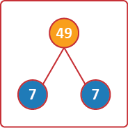
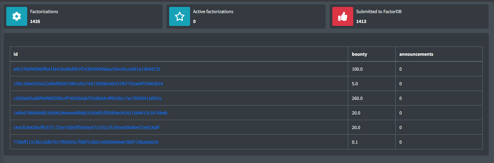
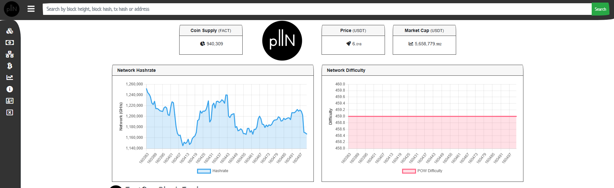

Explaining the Fact0rn, how to works ands its uses
Fact0rn, put simply, is a blockchain with a real-world purpose. FACT0rn factors very, VERY large numbers. Super simple, right? I’m not here to hurt anyone’s feelings or crypto gambling dreams, but the FACT is, most blockchains are just code fixing problems nobody has or cares about. The real point is, FACT0RN is going to matter big-time in security and science. Large numbers are the backbone of internet security—they’re used to encrypt data. The bigger the number, the harder it is to factor, the safer your info stays. Before I contiune, Here are some fun facts about fact0rn: 1. FACT0RN got a $50,000 grant from coinbase. 2. FACT0RN is the first blockchain to factor semiprimes. 3. Despite having unlimited supply and launching on the 20th of April, 2022 (or 4/20/2022 at 06:09 EST), it still has less than 1 million coins circulating.
FACT0RN tackles something called semiprimes—numbers made by multiplying two prime numbers.
A prime number is only divisible by 1 and itself, like 3 or 7.
So, a semiprime could be 21 (that’s 3 × 7) or 49 (7 × 7).

Why does this matter?
Internet security relies on it being super hard to factor huge numbers.
These numbers protect stuff like your birthdate, credit card, or search history.
We call them RSA numbers, and they’re semiprimes.
FACT0RN’s job is to factor these kinds of numbers—numbers that keep the internet safe.
Here’s an example of an RSA number:
6145231632821777268976203541152384758429423891418951086686756782081112486971166267683491599945135114456343121248327170733599265101
That’s a 120-digit RSA number (or 399 bits).
It keeps data secure when you send it online.
If you factor it, you get two prime numbers—and with those, you could decrypt the data and peek inside.
But here’s the catch: most RSA numbers today are 2048 bits (about 617 digits).
And heres another catch: As the numbers get bigger, it get exponentially harder to factor them.
Bits measure encryption strength—more bits, tougher to crack.
FACT0RN’s not at 2048 bits yet—it’s working with numbers around 119 digits—but it’s still useful.
To recap: FACT0RN is a blockchain that factors large semiprimes instead of doing pointless hash puzzles like most blockchains.
This helps test internet security, spot weaknesses in RSA numbers, and even aids science projects.
Now, you might be wondering: How does FACT0RN find these semiprimes? A semiprime is the product of two prime numbers, but how do you get that product without knowing the primes first? Here’s how it works: FACT0RN starts with data from the last block—specifically its unique ID, called a hash. Miners take that hash and add a small number, called a nonce, which they can tweak (like 1, 2, 3…). Now for each increase in the nonce, miners will try to factor this newly created number. If it does not factor into 2 prime numbers, Then the nonce will be lifted by 1 and the process will be repeated. Until two prime numbers have been found.
Now heres where FACT0RN gets really cool: The blockchain creates its own semiprimes, but it also lets you submit your own. So what you can do is say "Hey, I found this semiprime, can you factor it for me? I'll pay you in FACT0RN tokens." Now what should happens is that the miners choose to take your semiprime, factor it, and give you the two prime numbers. The empahsis on the choose is important because the miners are not forced to take your semiprime, they can choose to take it or not, Rather its based on the amount of FACT0RN tokens you are willing to pay them. I.e the Bounty. This is called the Deadpool and will we now dive into it.
Here we have the main page of the Deadpool (You will need to make an account), where you can submit your semiprime and the amount of FACT0RN tokens you are willing to pay to get it factored. On the Image there are 3 main headers to look for, these are Job, C and Comment. The Job is essentialy the number someone wishes to factor. The c means how long the number is. and the comment is what the person who has submitted the job has to say. Lets focus on the first job, As we can see the length of the number is 147 digits but lets take a closer look at the comment. We can see it leads to a link where you can click here. Now this website called factordb is a website that displays the factors of any number out there. Now we can see that the status column says that the number has yet to be factored. So someone can takes this job, successfully factors this 147 digit number, will have those factors uploaded on the website. Now on the left hand, you can see the header 'Deadpool' and under it you can see both Entries and Solved Entries. Now click on the Solved Entries and you will see all the numbers that have been factored. And scroll down till you see the row with the bounty set at 30.0. Then click on the ID And now you can the semi prime and one of its factors. Now we only need one factor to be displayed as we can simply divide the semi prime by the factor to get the other factor. Due to the length of this use the scroll bar on the bottom to scroll to the right. And there you can see the amount of bits the number is. (Reminder its another way to measure the length of a number) So the person who factored this number will be rewarded with 30.0 FACT0RN tokens. Now in US dollar terms its about 30 times 11.50 which is about 345 dollars (At the time of being rewarded). How did I find that out? On the column to the right of the solution we can see the 'height'. This height corresponds to the finalised block which we can see throught the FACT0RN explorer .
Take this number of 157392 and paste it in search bar at the top of the page and press enter. And you be directed to this page. We can the the timestamp in the right corner and if we use that data to correspond with FACT0RNs price history we can see the price of FACT0RN at that time to be around $11.50.
This concludes what FACT0RN is and how it works. But its ingenuity does not stop there. Another unique aspect of crypto currency is the issuance of tokens and how it is determined. Unlike other disinflationary currencies, such as Bitcoin, FACT0RN has a unique way of how tokens are emitted. But that will be discussed in the next page.